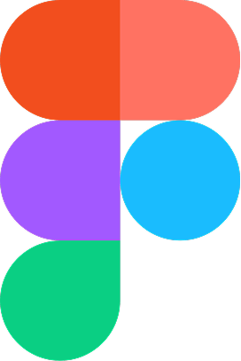
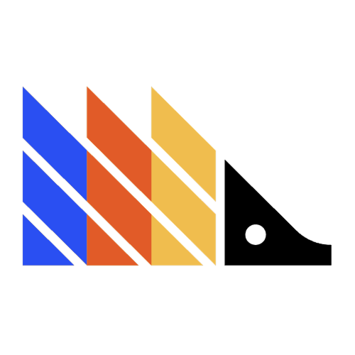
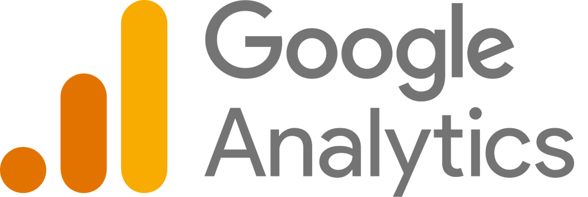
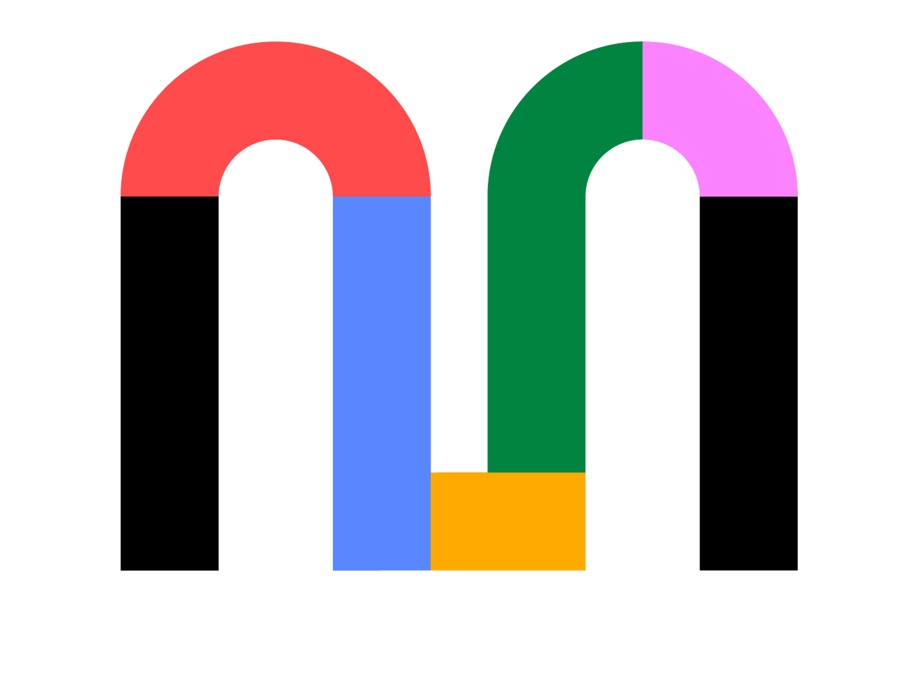
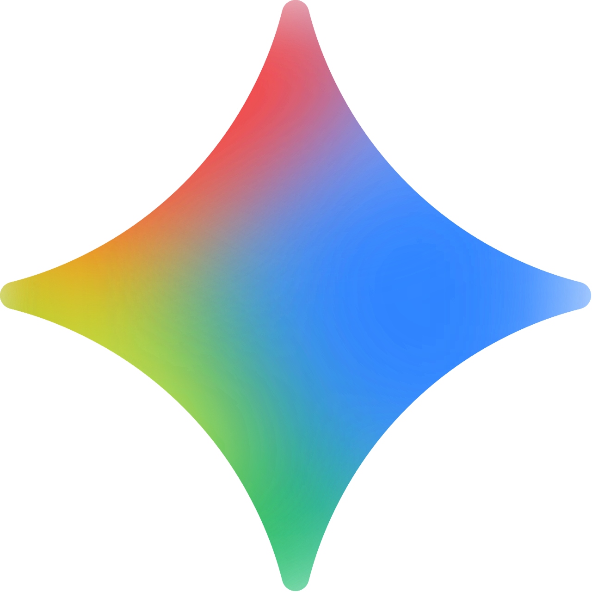

From interface details to high-level strategy, I bridge the gap with a multidisciplinary perspective.
x
Available for contract and full time rolesDownload CV
5+ years in product design
My path into product design started at the Universidade de São Paulo (USP), studying Architecture & Urban Planning alongside coursework in Computer Science. Designing physical structures taught me systemic thinking and spatial flow, while computing gave me technical logic. Today, I bring that exact hybrid perspective to solve unstructured B2B challenges.
In my most recent role at Omnichat, I owned UX for Whizz (Post-Sales), an AI agent platform for e-commerce. I maintained direct contact with clients to uncover operational friction and worked closely with technical and engineering teams to translate API integrations and multi-step AI automations into clear, effortless user journeys.
Toolkit






How I approach design
My process starts with structuring the problem before proposing a solution. I map the full user flow, not just the screen, and I use qualitative research and behavioral analysis to identify where friction is actually costing the business, not just where it looks inconvenient.
On the Take Blip billing redesign, this meant tracing close to 40% of support tickets back to the legacy usage screen before any wireframe was drawn.
I work most often in products where technical complexity is the core design problem, such as automation, AI agents, and data-heavy systems. In these environments, my role is to decide what to expose, what to simplify, and what to hide, so users without technical background can operate the product independently.
I don't treat delivery as the end of the process. I validate with data, using metrics like SUS scores, CSAT, and adoption rates to confirm whether a design decision actually worked, and I adjust when it didn't.
Tackling Systemic Complexity
I specialize in turning dense data, backend logic, and API-driven workflows into clear, human-friendly interfaces.
Direct Client & Tech Alignment
I bridge user needs with engineering constraints by staying close to customers and speaking fluent tech with developers.
Data-Informed Iteration
I combine qualitative research, usability testing (Maze), and analytics (Hotjar, Mixpanel) to validate hypotheses and drive real business impact.
Past experiences
Omnichat — Product Designer
May 2026 — PresentLed end-to-end UX for Whizz (Post-Sales AI Agent platform). Worked in direct contact with e-commerce clients and engineers to simplify complex automation workflows and API integrations.
Asksuite — Product Designer
Jun 2024 — May 2026Designed AI automation tools (AskFlow Agents) for hospitality B2B SaaS, leading discovery and owning end-to-end interface design from drag-and-drop builders to operational dashboards.
Vivo Telefônica — Senior Product Designer
Jul 2023 — Jun 2024Led discovery and UX optimization for enterprise B2B e-commerce sales funnels; scaled research through asynchronous Maze usability testing.
Ília / Livelo — Product Designer
Dec 2022 — Jun 2023Facilitated Lean Inceptions and Teresa Torres Opportunity Trees to validate e-commerce features, achieving 90% user comprehension in testing.
Take.blip — Product Designer Jr.
Feb 2022 — Nov 2022Designed consumption and billing dashboards for financial back-office; post-launch achieved a +3,500% MAU growth, 80% retention rate, and 82 SUS score.